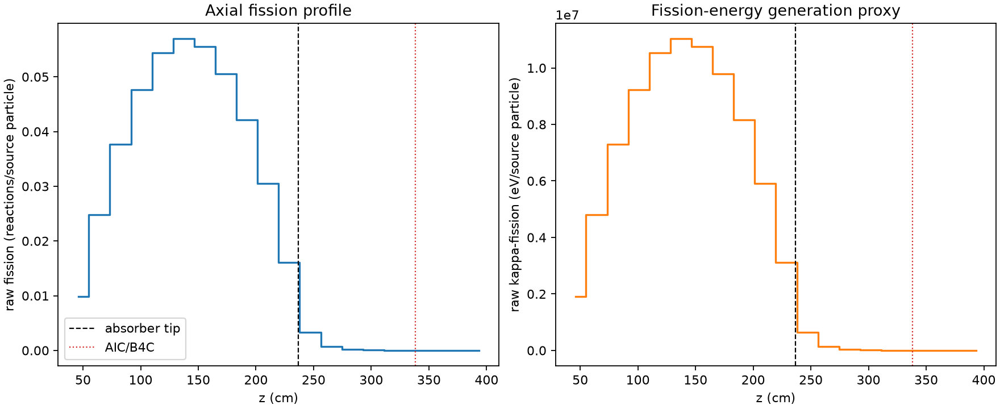
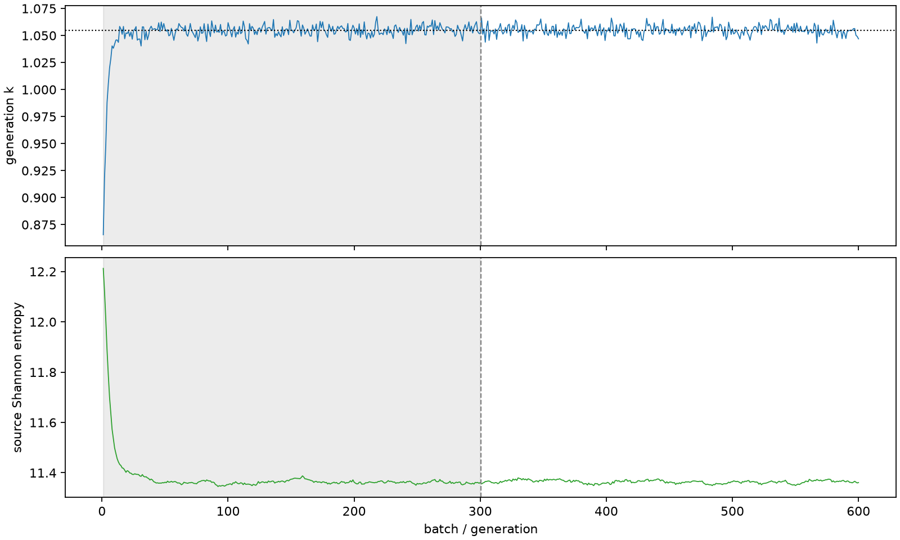

| field | value |
|---|---|
| experiment | V2-STAGE_256_OGRENCI_02-0020 |
| k | 1.0547437820715224 |
| MC standard error | 0.00018468337897256732 |
| seconds | 1009.906752183997 |
| acceptance | not_assessed |
| convergence | review_required |
Completed is output integrity only; physical and statistical review required. Zero tallies do not prove zero production or zero uncertainty.
| diagnostic | value |
|---|---|
| geometric fuel voxels | 5280 |
| zero fission tally voxels | 668 |
| low signal fuel voxels | 1487 |
| low signal fission share | 8.683198256450998e-05 |
| low signal kappa share | 8.686027004124607e-05 |
| important fission share | 0.9501343490229757 |
| previous filter included | 3793 |
| duration estimate s | 1562.5173488400023 |
| actual minus estimate s | -552.6105966560053 |
| fission relative MC error | statistics |
|---|---|
| all_geometric_fuel | {"voxels": 5280, "positive_mean_voxels": 4612, "zero_mean_voxels": 668, "undefined_relative_error_voxels": 668, "median": 0.00989287276513541, "p95": 0.7385671662648574, "maximum": 1.0000000000000002} |
| low_signal | {"voxels": 1487, "positive_mean_voxels": 819, "zero_mean_voxels": 668, "undefined_relative_error_voxels": 668, "median": 0.5121677268355183, "p95": 1.0, "maximum": 1.0000000000000002} |
| important_95pct | {"voxels": 2518, "positive_mean_voxels": 2518, "zero_mean_voxels": 0, "undefined_relative_error_voxels": 0, "median": 0.007128698239191531, "p95": 0.010928749464747579, "maximum": 0.013409168576804778} |
| outside_previous_filter | {"voxels": 1487, "positive_mean_voxels": 819, "zero_mean_voxels": 668, "undefined_relative_error_voxels": 668, "median": 0.5121677268355183, "p95": 1.0, "maximum": 1.0000000000000002} |
| kappa_fission relative MC error | statistics |
|---|---|
| all_geometric_fuel | {"voxels": 5280, "positive_mean_voxels": 4612, "zero_mean_voxels": 668, "undefined_relative_error_voxels": 668, "median": 0.009881366718845205, "p95": 0.7385157040710365, "maximum": 1.0000000000000002} |
| low_signal | {"voxels": 1487, "positive_mean_voxels": 819, "zero_mean_voxels": 668, "undefined_relative_error_voxels": 668, "median": 0.5130638500378857, "p95": 1.0, "maximum": 1.0000000000000002} |
| important_95pct | {"voxels": 2518, "positive_mean_voxels": 2518, "zero_mean_voxels": 0, "undefined_relative_error_voxels": 0, "median": 0.007120609260867018, "p95": 0.0109161636868754, "maximum": 0.013391806037966778} |
| outside_previous_filter | {"voxels": 1487, "positive_mean_voxels": 819, "zero_mean_voxels": 668, "undefined_relative_error_voxels": 668, "median": 0.5130638500378857, "p95": 1.0, "maximum": 1.0000000000000002} |
| axial bin | fission share | kappa-fission share |
|---|---|---|
| 1 | 0.022926090177772796 | 0.022927219722796374 |
| 2 | 0.05755065008099522 | 0.05755053428384674 |
| 3 | 0.08746345445721056 | 0.08746271109811646 |
| 4 | 0.11069701291627124 | 0.11069636356593626 |
| 5 | 0.12630368509102982 | 0.126302729082466 |
| 6 | 0.1323098249225527 | 0.13230908445096642 |
| 7 | 0.12913572508385965 | 0.1291349504918502 |
| 8 | 0.11747947993796494 | 0.11747865229798682 |
| 9 | 0.09789640420336254 | 0.09789567525769478 |
| 10 | 0.07080904101024071 | 0.07080877499161312 |
| 11 | 0.037448736574628515 | 0.03744918763560647 |
| 12 | 0.0077690708542283255 | 0.007772255974806323 |
| 13 | 0.0017006537342372436 | 0.001701458757583419 |
| 14 | 0.0003862790888632757 | 0.0003864673425246026 |
| 15 | 9.977099802826715e-05 | 9.980171855028964e-05 |
| 16 | 1.98650484623191e-05 | 1.9876831363246065e-05 |
| 17 | 3.997500570280447e-06 | 3.997539802524819e-06 |
| 18 | 2.4520040398861305e-07 | 2.456772103336701e-07 |
| 19 | 1.1694593385709139e-08 | 1.1836617254133923e-08 |
| 20 | 1.4247243463299282e-09 | 1.4426621506925362e-09 |
Histories include the inactive-to-active transition at batch 300. kappa-fission approximates fission energy production, not total heat deposition.

